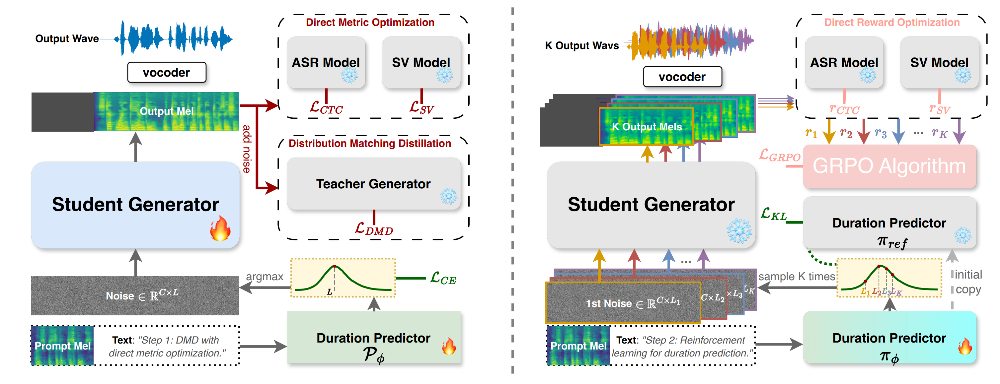

DMOSpeech 2
Reinforcement Learning for Duration Prediction in Metric-Optimized Speech Synthesis
[Paper] [Code]Abstract
Diffusion-based text-to-speech (TTS) systems have made remarkable progress in zero-shot speech synthesis, yet optimizing all components for perceptual metrics remains challenging. Prior work with DMOSpeech demonstrated direct metric optimization for speech generation components, but duration prediction remained unoptimized. This paper presents DMOSpeech 2, which extends metric optimization to the duration predictor through a reinforcement learning approach. The proposed system implements a novel duration policy framework using group relative preference optimization (GRPO) with speaker similarity and word error rate as reward signals. By optimizing this previously unoptimized component, DMOSpeech 2 creates a more complete metric-optimized synthesis pipeline. Additionally, this paper introduces teacher-guided sampling, a hybrid approach leveraging a teacher model for initial denoising steps before transitioning to the student model, significantly improving output diversity while maintaining efficiency. Comprehensive evaluations demonstrate superior performance across all metrics compared to previous systems, while reducing sampling steps by half without quality degradation. These advances represent a significant step toward speech synthesis systems with metric optimization across multiple components.
Contents
Model Overview

Figure 1: (a) Left: The original DMOSpeech architecture, where the duration predictor is trained self-supervisedly and separate from the TTS component, creating a disconnection that prevents end-to-endoptimization. (b) Right: Our proposed DMOSpeech 2 framework, which employs Group Relative Policy Optimization (GRPO) to train the duration predictor with reinforcement learning, using speaker similarity and word error rate as reward signals, enabling end-to-end optimization of the entire TTS pipeline.
All samples in this demo page are generated with teacher-guided sampling (8 teacher steps + 3 student steps) with pretrained Vocos as vocoder.
In-the-wild Samples
This section compares with MegaTTS 3 and F5-TTS v1.0. Since MegaTTS 3 does not allow customizable voices, the first sample from MegaTTS 3 is taken from MegaTTS 3 demo page. The latter two samples were synthesized with built-in voice profiles from MegaTTS 3 HuggingFace Space. F5-TTS samples were synthesized using F5-TTS v1.0. The texts for the latter two samples are taken from MaskGCT demo page.
| Prompt | Target Text | DMOSpeech 2 | MegaTTS 3 | F5-TTS v1.0 |
|---|---|---|---|---|
|
丁真 (Zhen Ding) |
在这big城市，充满着layers的层次，时间仿佛freeze停滞，我只想回到Snow Leopard身边再来一次！ | |||
|
范闲 |
梯度是一个多变量微积分中的概念，用于描述一个标量场在某一点处的最大变化率，以及变化最快的方向。在物理学中，梯度通常用来表示某个物理量的空间变化情况，例如温度或压力。 | |||
|
Shou Zi Chew |
Boeing is currently dealing with the aftermath of the 737 MAX crashes, which have led to a loss of public trust, regulatory challenges, and financial strain. |
In-the-wild Samples 2
This section compares with DMOSpeech and F5-TTS v1.0. The samples of DMOSpeech are from DMOSpeech demo page.
| Prompt | Target Text | DMOSpeech 2 | DMOSpeech | F5-TTS v1.0 |
|---|---|---|---|---|
|
Noisy Recording (Sports Commentator) |
And here is our DMD Speech, and, oh my god! It can generalize to noisy commentating voice too, what a surprise! | |||
|
Screaming Voice (Death Metal Growl) |
This is DMD. It gets your voice deep. Why can it do metal growl? Why, can it do metal growl? | |||
|
Processed Voice (StarCraft Protoss Advisor) |
Executor, your model requires more distillation. Distillation complete. In taro DMD! |
Zero-shot Generation
This section compares DMOSpeech 2 with teacher-guided sampling to its teacher, F5-TTS v0.6.2. The prompt, text and F5-TTS samples are taken from the demo page of F5-TTS.
| Language | Prompt | Same Language Generation | Cross-lingual Generation | ||
|---|---|---|---|---|---|
| DMOSpeech 2 (student) | F5-TTS (teacher) | DMOSpeech 2 (student) | F5-TTS (teacher) | ||
| EN | |||||
| I don't really care what you call me. I've been a silent spectator, watching species evolve, empires rise and fall. But always remember, I am mighty and enduring. Respect me and I'll nurture you; ignore me and you shall face the consequences. | 顿时，气氛变得沉郁起来。乍看之下，一切的困扰仿佛都围绕在我身边。我皱着眉头，感受着那份压力，但我知道我不能放弃，不能认输。于是，我深吸一口气，心底的声音告诉我："无论如何，都要冷静下来，重新开始。" | ||||
| Perhaps they are driven by the delicious blend of flavors, or it could be the appealing visual presentation. At the end of the day, our choices in food reflect our personal preferences and sometimes, even our lifestyle or belief system. | 我抬起头，坚定地说："身高不能决定一切，这世界在看我，我更看得到世界。无论是北上广，或是别的什么，我都将以我自己的方式去攀爬，去追逐。我可能小，但我绝不会被忽视。" | ||||
| Your safety and the pack's reputation are at stake. Your bravery is admirable, but sometimes bravery is knowing when to retreat. Please, consider returning with me. We can work out a plan, but only if you're willing to listen. | 你的安全以及族群的声誉都危在旦夕。你的勇敢令人钦佩，但有时候勇敢在于懂得何时撤退。拜托，考虑一下和我一起回去吧。我们可以制定一个计划，但前提是你愿意倾听。 | ||||
| ZH | |||||
| 突然，身边一阵笑声。我看着他们，意气风发地挺直了胸膛，甩了甩那稍显肉感的双臂，轻笑道："我身上的肉，是为了掩饰我爆棚的魅力，否则，岂不吓坏了你们呢？" | Suddenly, there was a burst of laughter beside me. I looked at them, stood up straight with high spirit, shook the slightly fleshy arms, and smiled lightly, saying, "The flesh on my body is to hide my bursting charm. Otherwise, wouldn't it scare you?" | ||||
| 顿时，气氛变得沉郁起来。乍看之下，一切的困扰仿佛都围绕在我身边。我皱着眉头，感受着那份压力，但我知道我不能放弃，不能认输。于是，我深吸一口气，心底的声音告诉我："无论如何，都要冷静下来，重新开始。" | Suddenly, the atmosphere became gloomy. At first glance, all the troubles seemed to surround me. I frowned, feeling that pressure, but I know I can't give up, can't admit defeat. So, I took a deep breath, and the voice in my heart told me, "Anyway, must calm down and start again." | ||||
| 皇上的面色未变，宛如雕塑般静止，他的眼中闪过一丝动人的温度。他深深地看了那位忠心耿耿的臣子一眼，终于开口："诺，我会再考虑考虑的。"他的声音低沉且坚定，留下空气中隐隐的无奈与柔情。 | The emperor's complexion did not change, remaining as still as a sculpture, and a touch of touching warmth flashed in his eyes. He deeply glanced at the loyal minister, and finally spoke: "Well, I will consider it again." His voice was low and firm, leaving a faint hint of helplessness and tenderness in the air. | ||||
Code-Switch Examples. Prompt, text and samples are from F5-TTS demo page.
| Prompt | Text | DMOSpeech 2 | F5-TTS |
|---|---|---|---|
| 你昨天的performance真是outstanding，完全展示了你的skills。 | |||
| 我觉得我们需要一个更clear的strategy来实现我们的goals。 | |||
| 这次旅行的schedule有点tight，我们需要plan得更efficient一些。 | |||
| 他今天的mood看起来不太好，可能需要一些space。 |
Emotion
Compare with F5-TTS samples from F5-TTS.
| Emotion | Prompt | Text | DMOSpeech 2 | F5-TTS |
|---|---|---|---|---|
| Sad | I was, like, talking to my friend, and she’s all, um, excited about her, uh, trip to Europe, and I’m just, like, so jealous, right? | |||
| Fearful | ||||
| Happy | ||||
| Angry | So, I was, like, at the, um, grocery store, and, uh, I saw this, like, really yummy-looking, um, cake, y’know? And I, uh, totally wanted to, like, buy it, but, um, I was, like, on a diet, so, uh, I just, like, stared at it for a while, y’know? | |||
| Calm | ||||
| Disgust | ||||
Robustness
The following Chinese samples are from F5-TTS demo page .
| Prompt | Text | DMOSpeech 2 | F5-TTS |
|---|---|---|---|
| 针蓝线蓝领子蓝，蓝针蓝线蓝领蓝。蓝针蓝线连蓝领，针蓝线蓝领子蓝。 | |||
| 墙上画凤凰，凤凰画在粉红墙。红凤凰、粉凤凰，红粉凤凰、花凤凰。红凤凰，黄凤凰，红粉凤凰，粉红凤凰，花粉花凤凰。 | |||
| 随后，民警还在店里发现一把锤子锤子锤子锤子锤子锤子。 | |||
| 北京在出行规模规模规模规模规模，城市影响力方面方面方面方面方面表现优异优异优异优异优异。 | |||
The following English samples are randomly picked from F5-TTS demo page .
| Prompt | Text | DMOSpeech 2 | F5-TTS |
|---|---|---|---|
| Active artists always appreciate artistic achievements and applaud awesome artworks. | |||
| Daring dancers dazzled during dynamic dance displays, drawing delighted crowds. | |||
| Gallant gophers gracefully gambled golden gooseberries on grandiose glaciers. | |||
| Jovial joggers joyfully joined jogging jaunts, justifying joyful jolliness. |